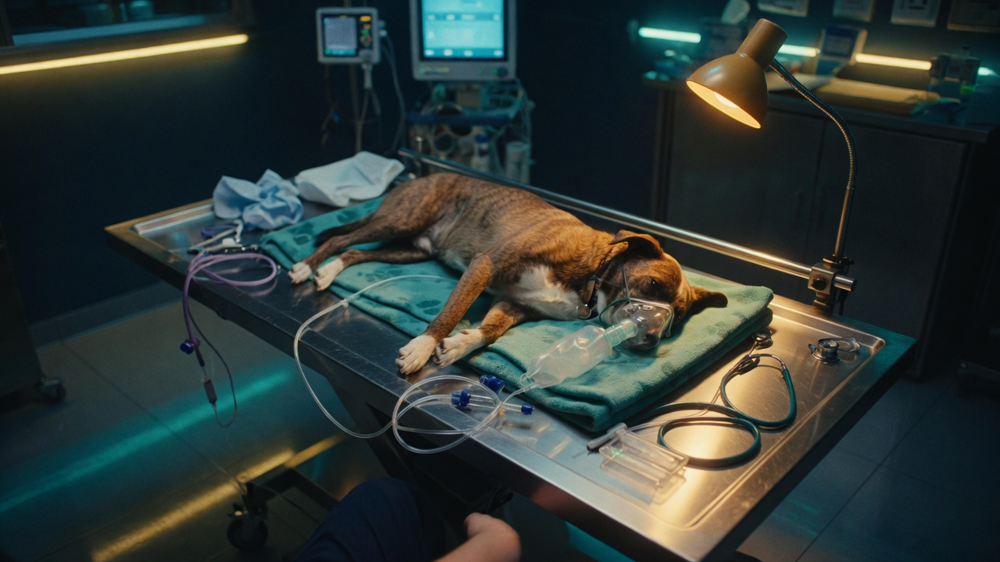
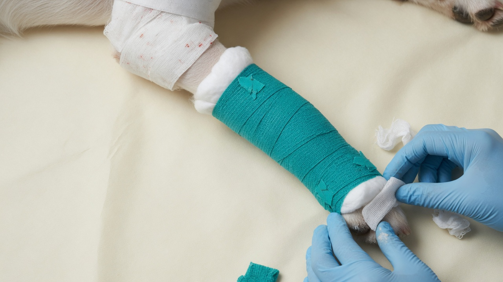
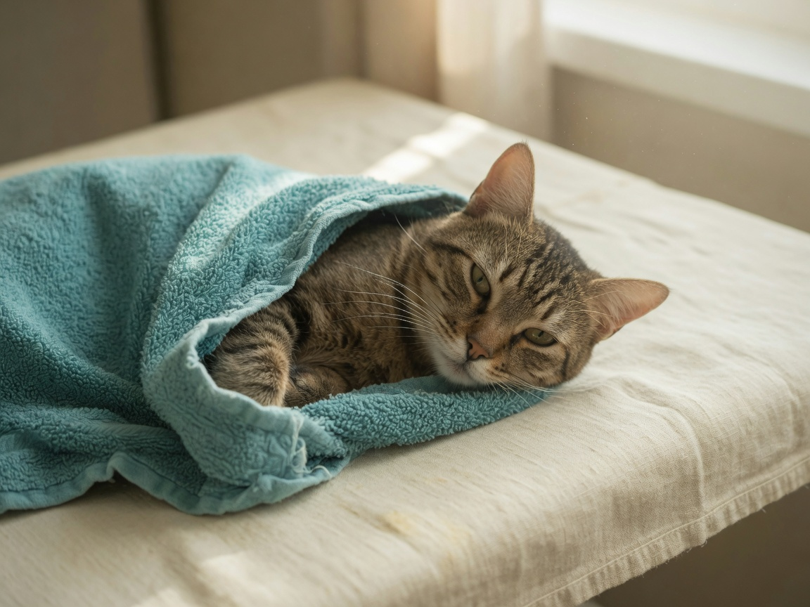
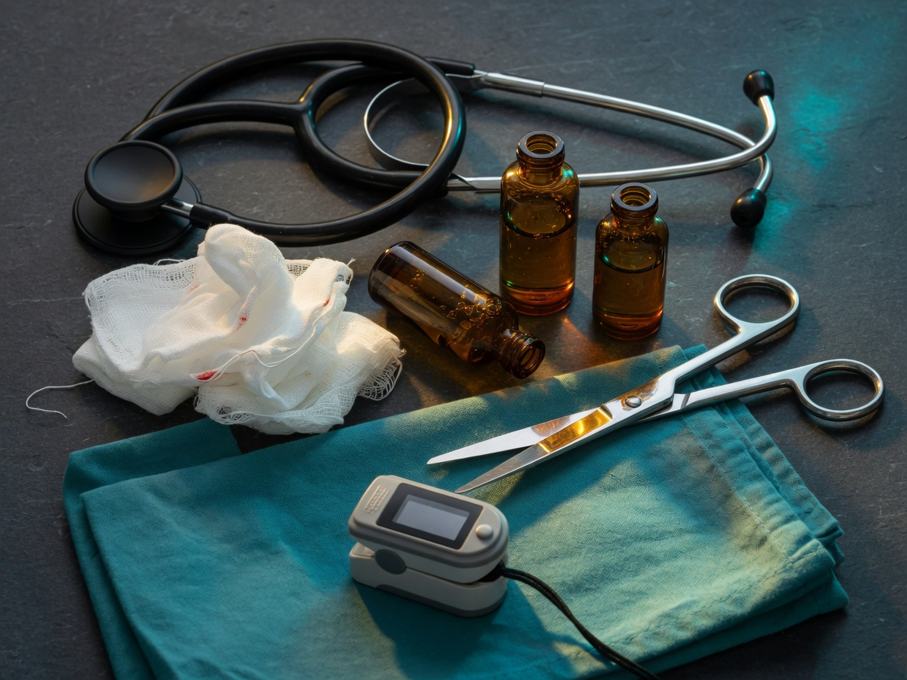

Guia de treinamento para auxiliares veterinários, com foco em atendimento inicial, trauma musculoesquelético e manejo terapêutico das situações de rotina — doses, vias, intervalos e tempo de uso sob prescrição do médico-veterinário.
Em um trauma, uma fratura visível pode coexistir com lesões torácicas, abdominais, neurológicas ou hemorrágicas que não são aparentes na chegada. O método e o fluxo de oxigênio devem seguir o protocolo e a tolerância do paciente.
O CFMV (Resolução nº 1.260/2019) define o auxiliar como apoio, assistência e acompanhamento do trabalho do médico-veterinário. Aferir parâmetros, auxiliar em primeiros socorros, contenção e imobilizações — sempre sob orientação.
Rápido, visual e útil no plantão. Os quadros Faça, Não faça e Chame o veterinário cabem em poucos segundos. A seção terapêutica mostra o que o veterinário costuma prescrever — o auxiliar prepara, confere e administra somente após ordem.
Antes de qualquer ferida visível. Tendência vale mais que um número isolado.
Reduzir movimento, proteger tecidos, nunca “colocar o osso no lugar”.
Opioide, fluido, anticonvulsivante, antibiótico: dose, via e intervalo prontos para a prescrição.
Regra prática: se a conduta depende de diagnóstico ou prescrição, pare e chame o médico-veterinário.
Avalie risco de mordida, fuga, atropelamento, objetos perigosos e necessidade de mais pessoas. Reduza estímulos e peça ajuda.
Use a menor contenção necessária. Dor, dispneia e trauma tornam um animal dócil imprevisível. Não force posições que agravem a lesão.
Clique em cada letra. Em trauma, o ABCDE vem antes da fratura.
Referências para triagem — não interpretar isoladamente. Idade, estresse, dor, porte e ambiente alteram os números. Tendências importam.
| Parâmetro | Referência | Atenção | Como registrar |
|---|---|---|---|
| Temperatura retal | Cães 38,0–39,2 °C Gatos 38,0–39,5 °C | Hipo ou hipertermia, sobretudo com outros sinais | Valor + horário + método + intervenção |
| FC | Cães 60–160 bpm Gatos 120–220 bpm | Muito acima/abaixo ou mudança súbita | Bpm + qualidade do pulso + horário |
| FR | Cães 18–36 mpm Gatos 20–40 mpm | Esforço, cianose, boca aberta em gato | mpm + padrão/esforço |
| TPC / mucosas | TPC 1–2 s; mucosas rosadas | TPC prolongado, pálida/cianótica, mudança progressiva | Cor + TPC + horário |
| PAS / glicemia | Interpretar conforme equipamento, porte e contexto | Hipotensão ou hipoglicemia confirmada = vet imediato | Valor + aparelho + horário |
Fraturas e luxações causam dor, edema, instabilidade e lesão de músculos, nervos e vasos. O trauma que quebrou o osso pode ter lesado o interior. Não trate a fratura isoladamente.

Pense também em coluna/pelve, tórax, hemorragia interna, trato urinário, choque e feridas profundas. Aparência discreta não exclui lesão grave.
Não tentar “colocar o osso no lugar”. Prioridade: reduzir movimento, proteger tecidos, minimizar dor/estresse e acelerar a avaliação veterinária.
Proteger o paciente até a avaliação definitiva. Radiografia, tala definitiva, fixador ou cirurgia pertencem ao planejamento veterinário.
Cobrir com gaze ou material estéril/limpo, controlar sangramento externo com pressão suave e direta quando indicado, evitar contaminação e encaminhar com urgência. Não empurrar tecido ou osso para dentro da ferida. Qualquer tala deve permitir monitorar perfusão e ser reavaliada se dor, edema ou cor distal piorarem.
Evitar torção, flexão, arrasto pelas patas ou levantamento por um único membro.
Superfície firme e plana ou cobertor esticado. Transferência com mais de uma pessoa, cabeça, pescoço e tronco alinhados. Imobilize sem comprimir o tórax.
Não dobrar/torcer a coluna; não levantar pelas patas; não arrastar pelo pescoço/coleira; não testar repetidamente sensibilidade; não permitir caminhada “para ver se melhora”.
Lesões penetrantes podem esconder dano profundo mesmo quando a abertura externa parece pequena.
Pressão direta com gaze/tecido limpo. Se encharcar, acrescente material por cima sem retirar o primeiro. Sangramento intenso ou que não cede: chame imediatamente.
Não retirar no local. Evite movimentá-lo e estabilize-o para transporte conforme a equipe. A remoção pode piorar a lesão ou o sangramento.
Estar responsivo e andando não exclui lesões internas. Siga a indicação de observação/hospitalização.
Movimentos lentos, voz calma, ambiente silencioso, superfície antiderrapante, evitar contenções prolongadas, aquecer quando indicado.
Postura anormal, vocalização, fuga, ofegação sem causa respiratória, proteção de área, agressividade defensiva, inquietação ou apatia. Compare a evolução, não um sinal isolado.
Cobertores e fontes de calor indiretas e protegidas. Evite contato direto com bolsas aquecidas (queimadura). Reavalie a temperatura.
Reduza o estresse. Resfriamento monitorado e interrompido conforme orientação. Evite gelo direto na pele.

Afastar objetos, proteger a cabeça, reduzir estímulos e cronometrar o episódio. Não colocar a mão na boca e não tentar conter os movimentos à força. Comunicar imediatamente.
Faixas de dose usadas na emergência de cães e gatos (Merck Veterinary Manual, Plumb, protocolos de trauma). São referências de treinamento — o veterinário ajusta por espécie, idade, choque, dor, função renal/hepática e fármacos disponíveis. O auxiliar não escolhe o fármaco; confere paciente, peso, via e horário após a ordem.

Corticosteroide em alta dose não é conduta de rotina no trauma medular agudo. AINE só depois de volume e pressão restaurados. Gato: cuidado extra com AINE, enrofloxacina (retinopatia) e lidocaína IV.
Estima a faixa prescrita a partir do peso. Confira sempre concentração da ampola, diluição e ordem escrita. Não administra sem prescrição.
O monitoramento é parte do tratamento. Registre tendências com horário, não só valores isolados.
| O que observar | O que registrar | Quando escalar |
|---|---|---|
| Respiração | FR, esforço, padrão, cor das mucosas | Piora do esforço, cianose, respiração muito alterada |
| Perfusão | Mucosas, TPC, pulso, temperatura periférica | Mucosa muito pálida/cianótica, pulso fraco, colapso |
| Neurológico | Consciência, postura, movimento, pupilas | Nova alteração, fraqueza/paralisia, convulsão |
| Membro/ferida | Edema, dor, sangramento, cor/temperatura distal | Edema progressivo, alteração de cor, sangramento |
| Urina | Micção, volume, alterações | Incapacidade de urinar, sangue na urina, mudança súbita |
Uma linha por horário. Piora súbita: interrompa e acione o veterinário. Os dados ficam neste navegador.
Oito questões do manual original, em múltipla escolha. Em dúvida de prescrição: a resposta correta é chamar o veterinário.
Versão digital expandida a partir do Manual_Treinamento_Auxiliares_Veterinarios_Revisado.pdf (02/09/2026), com módulo terapêutico para treinamento. Confira sempre o protocolo local e a concentração da apresentação em uso.